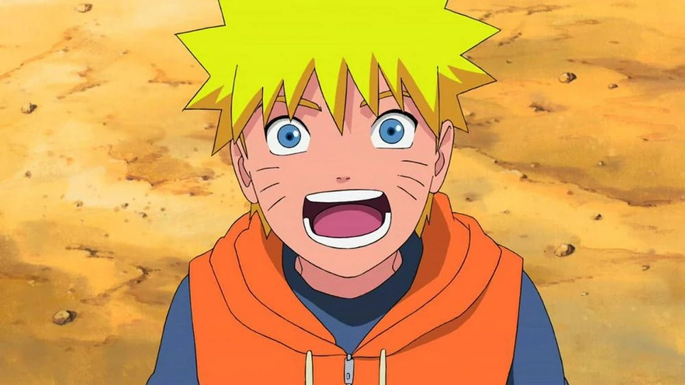

🟠 Naruto Clásico
En su etapa inicial, Naruto es un niño hiperactivo con traje naranja y azul. Sus tres marcas en cada mejilla simbolizan la presencia del Kyūbi dentro de él. Su expresión refleja energía y determinación.
Wiki no oficial del Séptimo Hokage
La apariencia de Naruto Uzumaki cambia a lo largo de la serie, mostrando su crecimiento físico, emocional y como guerrero. Cada transformación representa una etapa clave en su desarrollo como ninja y como líder de Konohagakure.
En su etapa inicial, Naruto es un niño hiperactivo con traje naranja y azul. Sus tres marcas en cada mejilla simbolizan la presencia del Kyūbi dentro de él. Su expresión refleja energía y determinación.

Durante Shippuden, Naruto es más alto y maduro. Su vestimenta cambia a negro con detalles naranjas. Su presencia se vuelve más seria y poderosa.
Al activar el Modo Sabio, aparece pigmentación naranja alrededor de sus ojos y pupilas horizontales. Su postura y mirada se vuelven más intensas, reflejando dominio de la energía natural.
Su cuerpo se cubre de chakra dorado brillante. Aparecen marcas negras y su silueta adquiere un diseño más estilizado. Esta transformación representa el control total del poder del Kyūbi.
Como Séptimo Hokage, Naruto muestra una apariencia más madura. Usa la tradicional capa blanca con detalles rojos. Su imagen refleja liderazgo, protección y estabilidad.